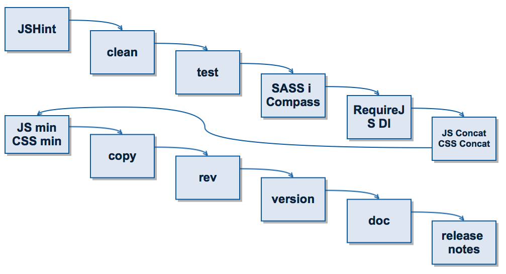

Budowanie
aplikacji JS
O mnie
Bartek Liebek
- Front-End developer
@ Lemon Demon
- bliebek@github
- bliebek@linkedin
- bliebek@gmail.com
Na początek
Każdą, nawet najprostszą aplikację buduj tak, jak dużą. Nigdy nie wiesz, kiedy i do jakich rozmiarów Twoja aplikacja urośnie.
Święty Graal*
- Łatwa produkcja
- One-click deployment
- oraz wiele innych...
*Po więcej informacji o Świętym Graalu odsyłam do filmu: Monty Python i Święty Graal
- Szkielet
- Development
- Testowanie
- Deployment
- Monitorowanie
- Jakość kodu i raportowanie
- Szkielet
- Development
- Testowanie
- Deployment
- Monitorowanie
- Jakość kodu i raportowanie
3 wspaniałych
3 wspaniałych
3 wspaniałych
3 wspaniałych
Tworzenie szkieletu aplikacji w
3 prostych krokach
npm install -g yo
yo webapp
grunt
Co właśnie zrobiłem?
- utworzyłem szkielet aplikacji z użyciem HTML5 Bolierplate
- skonfigurowałem RequireJS
- skonfigurowałem pliki bower.json i package.json
- dodałem wpisy do .gitignore
- utworzyłem pliki dla edytora: .jshintrc ,.editorconfig
- skonfigurowałem taski w pliku Gruntfile.js
- skonfigurowałem środowisko uruchamiania testów
- skonfigurowałem SASS
- Szkielet
- Development
- Testowanie
- Deployment
- Monitorowanie
- Jakość kodu i raportowanie
Grunt serve (watch)
grunt serve
- continuous testing
- continuous building
- continuous wszystko
- livereload
- Szkielet
- Development
- Testowanie
- Deployment
- Monitorowanie
- Jakość kodu i raportowanie
Testy
Nie stać Cię na pisanie testów?
Nie stać Cię na niepisanie testów!
Problemy
- Uruchamianie testów bez przeglądarki
- Implementacja DOM
- Headless testing
- Uruchamianie testów w różnych przeglądarkach
- Raportowanie coverage
Narzędzia
Demo
- Szkielet
- Development
- Testowanie
- Deployment
- Monitorowanie
- Jakość kodu i raportowanie
Klik... i zbudowane
- Szkielet
- Development
- Testowanie
- Deployment
- Monitorowanie
- Jakość kodu i raportowanie
Qbaka
- statystyki błędów
- raporty
- stacktrace
- lista akcji poprzedzających błąd
Qbaka - wady
- nie wspiera sourcemap
- nie radzi sobie ze zminimalizowanym js
- Szkielet
- Development
- Testowanie
- Deployment
- Monitorowanie
- Jakość kodu i raportowanie
Raporty
Release notes
git log {DOWOLNY_TAG}..HEAD --format="* %s (%an)"
Dokumentacja
Statyczna analiza kodu
Problemy
- bower i pakiety
- Heroku i npm
- grunt watch